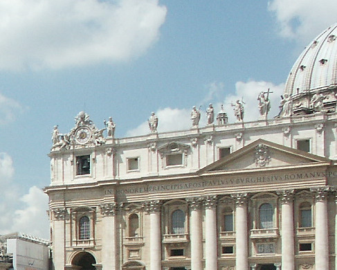

Johnnie and Oberta Baker's Photo Album Previous Gallery Next
|

The impressive dome which soars majestically towards the sky (h.137 meters) was designed by Michelangelo (1475-1564). It looks like a giant tiara, crowning the tomb of St. Peter. Construction, ordered by Pope Sixtus V was begun in 1588 and took only 22 months. Eight hundred men worked day and night (by torch-light) under the direction of the architect Giacomo Della Porta (1540-1602) who increased the overall height by seven meters and modified Michelangelo's original plans. It is the largest dome ever built at that height. "The immense structure seems to be balanced against the Roman sky, as if by miracle, free of all weight. It is awesome, and yet its lines are simple. This rare blend of strength and grace, of power and faith seems to summarize the genius of Michelangelo himself and it has become the monumental symbol of the Rome of Christ and the Popes much as the Colosseum is the symbol of the Rome of the Cesears. |